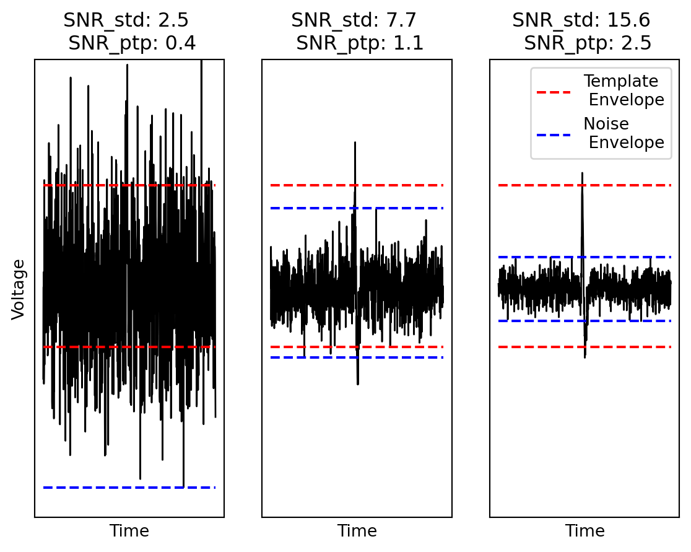

Code
import numpy as np
import matplotlib.pyplot as plt
import copy
def get_noise_ptp(noise,samples,repetitions):
max_noise = np.zeros(repetitions)
min_noise = np.zeros(repetitions)
noise_ptp = np.zeros(repetitions)
for i in range(0,repetitions):
subsamples = np.random.choice(noise_std,samples)
max_noise[i] = np.max(noise_std)
min_noise[i] = np.min(noise_std)
noise_ptp[i] = max_noise[i] - min_noise[i]
noise_ptp = np.mean(noise_ptp)
max_noise = np.mean(max_noise)
min_noise = np.mean(min_noise)
return noise_ptp,max_noise,min_noise
template = np.array([-0.1513909 , -0.16631116, -0.17847979, -0.18862691, -0.19872002,
-0.20880426, -0.21737931, -0.22361187, -0.22874592, -0.23452372,
-0.24082686, -0.24489726, -0.24255492, -0.22836725, -0.19307666,
-0.1191242 , 0.02425 , 0.28417833, 0.71488001, 1.34970811,
2.15717331, 3.00861469, 3.70470693, 4.06647289, 4.02591484,
3.64727615, 3.07093063, 2.43142789, 1.8080954 , 1.2247536 ,
0.67450634, 0.14624459, -0.36222091, -0.84091953, -1.2741004 ,
-1.6452294 , -1.94012256, -2.14839704, -2.26756383, -2.30440089,
-2.27405578, -2.19505695, -2.0840863 , -1.95470787, -1.81895549,
-1.68644032, -1.56235016, -1.44811373, -1.3434583 , -1.24678163,
-1.15489337, -1.06493637, -0.97600263, -0.88764435, -0.79968051,
-0.71323625, -0.62895673, -0.54701365, -0.46780424, -0.39222975,
-0.32111773, -0.25396762, -0.19020192, -0.13038235, -0.07453424,
-0.02132602, 0.02993237, 0.07660115, 0.11522204, 0.14610511,
0.17122906, 0.19176712, 0.20754389])
snr_values = [2.5, 7.5, 15.0]
noise_length = 1000
pad = int((noise_length - len(template)) / 2)
max_template = np.max(template)
min_template = np.min(template)
template_ptp = max_template - min_template
(fig,ax) = plt.subplots(1,len(snr_values))
for i in range(0,len(snr_values)):
snr_value = snr_values[i]
padded_template = np.zeros(noise_length)
noise_std = np.random.normal(loc=0.0,scale=template_ptp / snr_value, size=noise_length)
noise_ptp,max_noise,min_noise = get_noise_ptp(noise_std,len(template),1000)
template_over_noise = copy.deepcopy(noise_std)
template_over_noise[pad:len(template)+pad] += template
padded_template[pad:len(template) + pad] += template
ax[i].plot(template_over_noise,color="black",label="_Hidden",linewidth=1.0)
ax[i].plot([0,noise_length],[max_template,max_template],linestyle="dashed",color="red",label="_Hidden")
ax[i].plot([0,noise_length],[min_template,min_template],linestyle="dashed",color="red",label="Template \n Envelope")
ax[i].plot([0,noise_length],[max_noise,max_noise],linestyle="dashed",color="blue",label="_Hidden")
ax[i].plot([0,noise_length],[min_noise,min_noise],linestyle="dashed",color="blue",label="Noise \n Envelope")
#ax[i].plot(padded_template,color="red",alpha=0.2)
snr_std = np.around(template_ptp / np.std(noise_std),decimals=1)
snr_ptp = np.around(template_ptp / (np.max(noise_std) - np.min(noise_std)),decimals=1)
ax[i].set_title(f"SNR_std: {snr_std} \n SNR_ptp: {snr_ptp}" )
ax[i].set_ylim([-9, 9])
ax[i].set_xticks([])
ax[i].set_yticks([])
ax[i].set_xlabel("Time")
if i == 0:
ax[i].set_ylabel("Voltage")
if i == len(ax) - 1:
ax[i].legend()